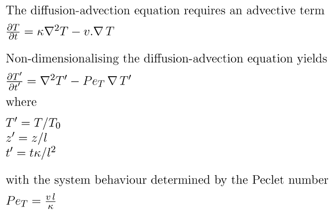

heat equation
(3)

For Pe < 1, diffusion dominates. For Pe > 10 advection dominates
question : what is alower bound on Pe for characteristic plate
tectonics (given that slabs must remain cool during subduction). Using l =
120 km and k = 10-6 m2/s, what is the lower bound on characteristic pleate
velocity.